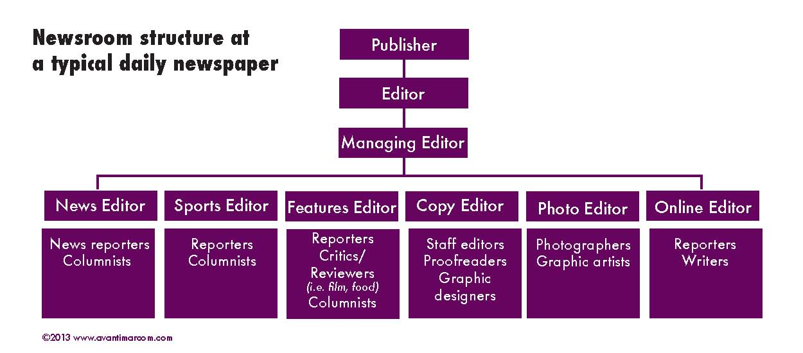

In the United States, journalists are not so optimistic. The pressure that information technologies have brought to the journalism profession have reached a point where many journalists are concerned about the total collapse of their profession. They view digital journalism as a complete departure from the objective values that journalism strives to encompass.
This is largely due to the structure of American industry ownership. Conglomerates have pushed traditional journalists out in order to usher in the wave of new tech savvy journalists. This push away from traditional journalism is being met with opposition mainly because of the United States' deeply professionalized journalism industry. As objectivity is losing its importance in digital journalism, and traditional journalists' jobs are threatened, traditional journalists are struggling to find their place.
Features of the American Model
- American model is considered the standard for journalism across the world
- American newspapers are dominant
- American journalists are the example of what role journalists should play in society
- Reporting is fact based, news driven and objective
- Long tradition of journalism training and research
- It is easier for Americans to be politically neutral, due to our two party system
- Journalists see themselves as fact based
- Industrial capitalism enables press to create their own revenue
American Newsroom Structure

- American newsrooms have a high division of labor
- Organized in beats
- News gatherers and news processors are separated
- Journalism is more of business
- Commercialism drives journalism towards sensationalism
Effects of the Digital Age
- Shift towards digital media threatens the financial viability of traditional publications
- Traditional publications are pessimistic due to a steady decline in print circulation and precipitous drop in advertising revenue, especially classified ads
- Many newspapers have been forced out of business or filed for bankruptcy
- Newspapers have needed to take a variety of measures to save money
- Widespread layoffs of employees
- Instituting pay freezes, dropping 401-K contributions, etc.
- Discontinuing some sections of the paper or reducing the size of the paper
- In some cases, eliminating print editions entirely